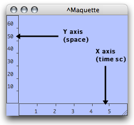
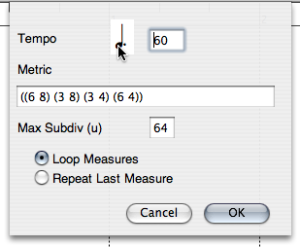
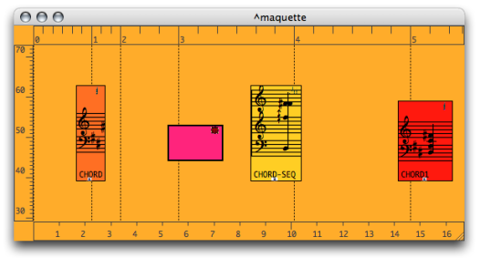

OpenMusic DocumentationHiérarchie de section : OM 6.6 User Manual > Maquettes > The Maquette Editor > Rulers and Grid
OpenMusic DocumentationHiérarchie de section : OM 6.6 User Manual > Maquettes > The Maquette Editor > Rulers and Grid
Navigation : page précédente | page suivante
Attention, votre navigateur ne supporte pas le javascript ou celui-ci à été désactivé. Certaines fonctionnalités de ce guide sont restreintes.
Rulers and Grid
Rulers
Function

|
The maquette editor has two rulers :
|
Zoom
The scale of each ruler can be increased or decreased manually to zoom in or out, vertically and/or horizontally in the maquette.
To modify the scale of a ruler :
click on a ruler to view the double-arrow cursor
keep pressing while scroling the mouse.
To zoom in scroll the mouse upwards or rightwards. To zoom out, scroll it downwards or leftwards.
Grid
Displaying and Resolution
To display the grid of the maquette editor, press g .The grid's resolution is calculated automatically, according to the zoom scale.

Quantization and Snap to Grid Option

|
The quantization allows to snap boxes to the grid when they are moved manually. The quantization of the ordinates axis can be defined with positive integers.
|
The Metric Ruler : Rhythmic Parameters of the Maquette
The metric ruler displays measures and beats. It can be shown at the top of the maquette editor. To display the metric ruler :
|

|
The metric ruler has three parameters :
- tempo
- meter
- a metric quantization applying to objects.
To define the musical parameters of the maquette, double click on the metric ruler.

Note that complex or irregular meter changes, which cannot be expressed by a single pattern, require a thorough expression, measure by measure... |

|
Snap to Metrics
The "Maximum Subdivision" frame takes a metric quantization unit.
The reference unit of this subdivision[1] **** is always equal to the whole note
 , no matter which time signature has been chosen.
, no matter which time signature has been chosen.For instance, "64" represents a 64th note subdivision, that is :
 .
.Values must be integers.
Any subdivision of the whole note, – other values than powers of 2 – are accepted by OM.
For instance, "12" represents a triplet's fourth note subdivision, that is :
 .
.

Here, we defined the following pattern : ((6 8) (3 8) (3 4) (6 4)) and chose the "Repeat Last Measure" option.
Grid and Metric Ruler
The grid fits the measure unit of the metric ruler.
Memento : Subdivisions
 = 1;
= 1;  = 2;
= 2;  = 4;
= 4;  = 8;
= 8;  = 16;
= 16;  = 32;
= 32;  = 64...
= 64...
Références :
Subdivisions of the Whole Note
Memento :
= 1,  = 2,
= 2,  = 4,
= 4,  = 8,
= 8,  = 16,
= 16,  = 32,
= 32,  = 64
= 64
Plan :
Navigation : page précédente | page suivante
A propos...(c) Ircam - Centre Pompidou